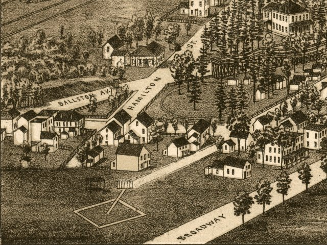

| Saratoga Springs, New York - 1888 |
|---|
 |
| Saratoga Springs, N.Y. 1888. Drawn & published
by L. R. Burleigh. Burleigh Lith. Est. Burleigh, L. R. (Lucien R.), 1853?-1923. CREATED/PUBLISHED Troy, N.Y. [1888] NOTES Perspective map not drawn to scale. Bird's-eye-view. Includes index to points of interest and view of "Saratoga Race Track." REFERENCE LC Panoramic maps (2nd ed.), 630 |